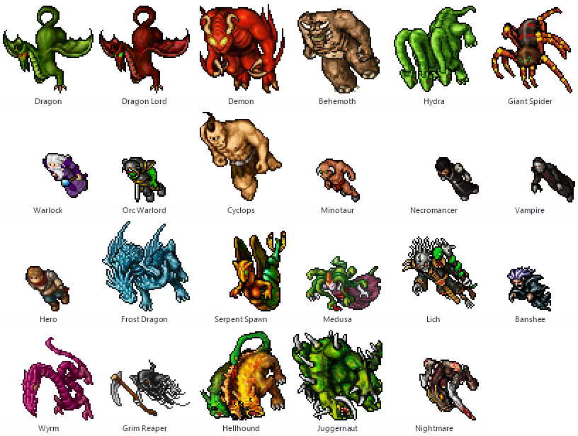
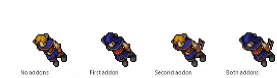
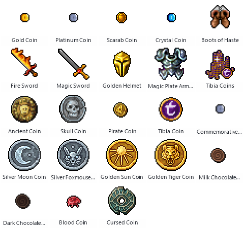

Fansite-Betreiber
Einheitliche Galerien von Kreaturen, Outfits und Items, Update-Seiten und Ressourcenpakete zum Download – im Format, das deine Seite verwendet.
Tibia Foundry liest die offiziellen Dateien deines installierten Tibia-Clients und macht daraus Sprites, animierte Outfit- und Kreaturen-GIFs, Item-Bilder, Karten, Sounds und Daten – hält alles in einer durchsuchbaren Bibliothek bereit und veröffentlicht komplette Galerien für das TibiaWiki oder jede Community-Website.
Wähle in Appearances ein Objekt und öffne Wiki-Infobox: Tibia Foundry schreibt die {{Infobox Object}} von TibiaWiki aus den offiziellen Client-Daten, nach den Parametern der Vorlage und den Konventionen des Wikis. Prüfen, ergänzen, was nur du weißt, und in den Artikel einfügen.
{{Infobox Object|List={{{1|}}}|GetValue={{{GetValue|}}}
| name = Magic Plate Armor
| actualname = magic plate armor
| itemid = 3366
| objectclass = Body Equipment
| primarytype = Armors
| slot = Body
| implemented =
| immobile = no
| walkable = yes
| pickupable = yes
| vocrequired = knights and paladins
| imbueslots = 2
| upgradeclass = 2
| weight =
| stackable = no
| marketable = yes
| droppedby = {{Dropped By|}}
| value =
| npcvalue = 90000
| npcprice = 0
| buyfrom = --
| sellto = H.L.: 720, Rashid
| notes =
}}Ob du ein Wiki, eine Fansite, eine Gildenseite oder einen YouTube-Kanal betreibst: Mit jedem Client-Update kommen dieselben Aufgaben zurück. Tibia Foundry erledigt sie für dich.
Einheitliche Galerien von Kreaturen, Outfits und Items, Update-Seiten und Ressourcenpakete zum Download – im Format, das deine Seite verwendet.
Einfügefertiges {{Infobox Object}}-Markup, richtig benannte Bilder, animierte GIFs, Gegenstands-IDs, Kreaturen- und Hausdaten und ein Dateilink für jedes hochgeladene Bild.
Transparente Sprites, Sprite-Sheets, Interface-Grafiken und pixelgenaue Vergrößerungen (Nearest Neighbor: keine Unschärfe, keine neuen Farben).
Kartenbilder, Gebiete und NPC-Positionen aus den Kartendaten des Clients, hochauflösende Karten für Guides und ein Bild von jedem Haus.
Sounds und Musik des Clients, Vergleichsbögen für Videos und Artikel sowie Metadaten und Credits für alles, was du veröffentlichst.
Stöbere durch alle Objekte, Outfits, Effekte, Kreaturen und Quests des offiziellen Clients und bewahre jede Client-Version als Archiv auf.
23 Werkzeuge, nach Aufgaben gruppiert, mit einem Client, einer Bibliothek und einem gemeinsamen Satz von Exportregeln.
Findet deine installierten Live- und Testserver-Clients, lädt Client-Ordner von überall und archiviert jede Version platzsparend – Datei für Datei geprüft und später wiederherstellbar.
Clients · Client Installation Rebuilder · Compatibility
Transparente Sprites oder ganze Sprite-Sheets, alle Objekte, Outfits, Effekte und Geschosse, Kreaturen- und Questdaten sowie die Sounds und die Musik des Clients.
Extract Sprites · Appearances · Static Data · Sounds
Animierte GIFs mit Fansite-Vorlagen, eingefärbte Outfits mit Addons und Mounts, Kreaturen-Animationen und pixelgenaue Vergrößerung von 1× bis 8×.
Appearances (Outfitter) · Advanced Tools
Eine Kopie der offiziellen Assets untersuchen und bearbeiten, Qt-Ressourcendateien entpacken und neu erstellen, klassische Tibia.dat/.spr-Kopien schreiben und Datei-Metadaten bearbeiten.
Assets Editor · RCC Editor · Client Converter · File Metadata
Kartenbilder, Gebiete und NPC-Positionen, hochauflösende Karten für Guides und Hausbilder für jeden Hausartikel.
Map Tools · House Images
Eine durchsuchbare Bibliothek aller Bilder, Animationen und Sounds – Sammlungen, Tags, Versionen, Duplikaterkennung – in die jeder Export automatisch aufgenommen wird.
Asset Library
Wiederverwendbare Projekte, die Galerien von Kreaturen, Outfits und Items, Update-Ressourcen und Wiki-Bilder erzeugen – einmal eingerichtet, bei jedem Update erneut ausgeführt.
Content Studio
Hunderte Bilder in einem Durchgang, in einer Hintergrund-Warteschlange mit Fortschritt, Abbruch und Wiederholung; Skripte zum Umbenennen, Skalieren und Konvertieren im Stapel.
Content-Studio-Warteschlange · Skripte
Profile für das TibiaWiki, deine Fansite, Galerien, Artikel oder ein Archiv: Größen, Formate, Namen, Ordner, Manifeste, Credits und Snippets.
Veröffentlichungsprofile · HTML-Galerien
Deine Sprites, GIFs, Renderings, Karten, Sounds und Grafiken an einem durchsuchbaren Ort. Die Dateien bleiben, wo sie sind; die Bibliothek liest sie nur.
Wähle, was entstehen soll, passe die Schritte an, wähle das Profil deiner Seite und starte. Tibia Foundry rendert, skaliert, benennt, sortiert, beschreibt und verpackt alles im Hintergrund.
Wähle Kreaturen, Outfits, Items, eine Sammlung aus der Bibliothek oder einen Ordner – aus einer durchsuchbaren Liste der Client-Inhalte.
Skalierung, Leinwand, Ausrichtung, Animation, Addons, Farben, Namen und Ordner – oder die Standardwerte der Vorlage übernehmen.
Die Warteschlange arbeitet im Hintergrund, während du das Programm weiter nutzt; jeder Auftrag lässt sich abbrechen oder wiederholen.
Bilder mit eingebettetem Credit, Kontaktbögen, JSON/CSV/Markdown, eine HTML-Galerie und ein ZIP.



Jede Fansite, jedes Wiki und jedes CMS will seine Bilder anders. Jedes Profil beschreibt eine Seite, sodass nichts in ein fremdes Format gezwängt wird. Die mitgelieferten Profile sind Ausgangspunkte, die du anpassen kannst.
| Profil | Bilder | Namen und Ordner | Extras |
|---|---|---|---|
| TibiaWiki | Client-Größe; PNG, Animationen als GIF | Spielnamen mit Leerzeichen · {category} | Ein [[File:…]]-Link pro Bild, JSON und CSV |
| Eigene Fansite | 2× | dragon-lord.gif · Kleinbuchstaben, Bindestriche | Ein HTML-<img>-Snippet pro Bild, JSON und CSV |
| Galerie-Website | 2× auf einer festen 128×128-Leinwand | Kleinbuchstaben, Unterstriche | Eine eigenständige HTML-Galerie, JSON und CSV |
| Artikel veröffentlichen | 3× | {name}_{scale}x | Markdown mit einer Credit-Zeile unter jedem Bild |
| Persönliches Archiv | Originalgröße | {version}/{category}/{id} {name} | Alle Manifest-Formate |
| Dein eigenes | Beliebige Skalierung, Leinwand, Rand, Hintergrund und Format | Vorlagen mit 22 Variablen | Deine Credit-Zeile und dein Snippet (Wiki, HTML, BBCode …) |
Vorschaubilder, Vollansicht, Kategorien, Suche, Metadaten und Credits, hell und dunkel – eine einzige index.html, die direkt von der Festplatte oder auf jedem Webhost funktioniert, ohne Server und Datenbank.
JSON-, CSV- (tabellensicher) und Markdown-Listen aller Bilder mit Name, ID, Kategorie, Größe, Client-Version und Credit – bereit für den Import in ein CMS.
Jedes PNG und GIF trägt deinen Namen als Ersteller und den Copyright-Vermerk von CipSoft für die Grafik. Dateien aus Bildern anderer behalten ihre ursprünglichen Ersteller.
Aufgenommen im Programm mit installiertem offiziellem Client – angezeigt im Design, in dem du diese Seite gerade siehst. Klicke auf einen Screenshot, um ihn zu vergrößern.
Home: der verwendete Client, zuletzt genutzte Werkzeuge und Exporte sowie Schritt-für-Schritt-Workflows für Fansites, die das passende Werkzeug öffnen.
Asset Library: echte Client-Assets mit Vorschaubildern, Kategorien, Sammlungen und bearbeitbaren Details – hier mit einer Suche nach „dragon“.
Duplikatsuche: Identische Dateien, dieselbe Grafik in anderen Dateien und ähnliche Bilder werden gemeldet – gelöscht wird nie etwas für dich.
Content Studio: ein Kreaturengalerie-Projekt – Rendern, Skalieren, Leinwand, Beschreibungen, Ordner, Kontaktbogen und Manifeste.
Veröffentlichungsprofile: Skalierung, Leinwand, Format und Dateinamenvorlagen mit Live-Beispiel, für jede Seite, auf der du veröffentlichst.
Appearances: über 43.000 Objekte, Outfits, Effekte und Geschosse; der Outfitter rendert ein Outfit mit beiden Addons und seinem Mount.
Extract Sprites: alle Sprite-Sheets des Clients, nach Größe eingereiht und als transparente PNGs oder ganze Sheets gespeichert.
Static Data: Kreaturen, Bosse, Achievements, Häuser und Quests, mit animierten Vorschauen und einer Galerie der Liste per Klick.
Item Catalog: Item-Namen und -IDs aus dem Client, dem TibiaWiki und weiteren Quellen, nach Quelle getrennt, mit Export.
Compare Files: was sich zwischen zwei Client-Versionen geändert hat, Objekt für Objekt – der Ausgangspunkt für Update-Artikel.
Map Tools: Gebiete, NPCs und Kartendateien, hochauflösende Karten und Minimap-Kacheln.
House Images: jedes Haus aus den Kartendaten des Clients gezeichnet, Etage für Etage, bereit für Hausartikel.
Sounds: die Sounds, Effekte, Umgebungsgeräusche und Musik des Clients anhören und extrahieren.
Assets Editor: Objekte, Flags, Sprite-Anordnung und Sprites – eine Kopie bearbeiten und geprüft speichern; der Client wird nie verändert.
RCC Editor: die Interface-Grafiken der Ressourcendatei des Clients ansehen, extrahieren und ersetzen, als Kopie gespeichert.
Clients: Client-Ordner, archivierte Revisionen jeder Version und Speicherplatz. (Lokale Pfade sind unkenntlich gemacht.)
Settings: mitgelieferte helle und dunkle Designs oder ein eigenes, Ordner, Dateisicherheit, Leistung, Benachrichtigungen und mehr.
Dein Credit: der Name des Erstellers, der in die Metadaten jedes exportierten PNG und GIF geschrieben wird.
Die Client-Ordner werden nur gelesen. Editoren speichern Kopien an anderer Stelle, und kein Werkzeug schreibt in einen Client- oder Archivordner.
Exporte werden an einem temporären Ort geschrieben und erst nach Abschluss an ihren Platz verschoben; ersetzte Dateien lassen sich sichern und wiederherstellen.
Kein Konto, keine Cloud. Das TibiaWiki wird nur von Funktionen kontaktiert, die es brauchen. Diagnoseberichte enthalten keine persönlichen Pfade und lassen sich daher bedenkenlos teilen.
{{Infobox Object}} für jedes Objekt, aus den Daten des Clients (Appearances → Wiki-Infobox).Kostenlos für Windows 10 und 11 (64 Bit). Wähle die passende Ausgabe – Installer und portable Ausgabe enthalten dasselbe Programm.
Für die meisten empfohlen.
Eine Datei, keine Installation.
Für Entwickler und Mitwirkende.
Führe den Installer aus oder entpacke die portable Ausgabe an einen beliebigen Ort.
Beim ersten Start findet das Programm deinen Tibia-Client und fragt, wie Client-Versionen aufbewahrt werden sollen.
Settings → Attribution: der Ersteller, der in jedes exportierte Bild geschrieben wird.
Öffne Home für Workflows oder Content Studio → New project für eine ganze Galerie.
Ja. Es ist ein kostenloses, unabhängiges Community-Projekt ohne Konto, ohne Werbung und ohne kostenpflichtige Funktionen.
Nein. Tibia Foundry liest nur die Dateien des Clients. Es schreibt nie in einen Client-Ordner, rührt weder deinen Charakter noch deine Hotkeys oder dein Konto an und interagiert während der Ausführung nicht mit dem Spiel.
Aus dem offiziellen Client auf deinem Computer. Die Grafiken und Daten von Tibia sind © CipSoft GmbH; Tibia Foundry schreibt diesen Hinweis und deinen Namen als Ersteller in jedes exportierte Bild. Beachte die Fansite-Regeln von CipSoft und die Bildrichtlinien deiner eigenen Website.
Nein. Die Bibliothek ist eine SQLite-Datenbank auf deinem Computer; deine Dateien bleiben, wo sie sind, und werden nur gelesen. Das Entfernen eines Assets aus der Bibliothek löscht nie eine Datei. Sichern und wiederherstellen kannst du sie im Tab Folders and storage der Bibliothek.
Nein. Die Duplikatsuche listet identische Dateien, dieselbe Grafik in anderer Größe und ähnliche Bilder auf, damit du entscheiden kannst, was du behältst. Das Programm löscht, verschiebt oder verbindet nichts.
Ja – genau dafür gibt es Veröffentlichungsprofile. Lege ein Profil mit deinen Größen, Formaten, Dateinamen, Ordnern, deiner Credit-Zeile und einem HTML- oder BBCode-Snippet an; das TibiaWiki-Profil ist nur ein Beispiel.
Beim Start prüft Tibia Foundry den installierten Client im Hintergrund und bietet an, die neue Version zu archivieren. Die Seite Compatibility zeigt, wie gut die neuen Dateien verstanden werden, und ein Update-Ressourcen-Projekt rendert alles, was seit der vorherigen Version neu ist oder sich geändert hat.
Den Installer für eine normale Installation mit Startmenü-Eintrag und Deinstallation; die portable Ausgabe, um das Programm ohne Installation aus jedem Ordner oder von einem USB-Stick zu starten. Beide enthalten dasselbe Programm.
Nein. Es ist ein unabhängiges Community-Projekt, das weder mit CipSoft GmbH noch mit Fandom verbunden ist oder von ihnen unterstützt wird. Es ist nicht Teil des Fansite Programme von CipSoft.
Lade Tibia Foundry herunter, wähle deinen Client und starte dein erstes Galerie-Projekt.